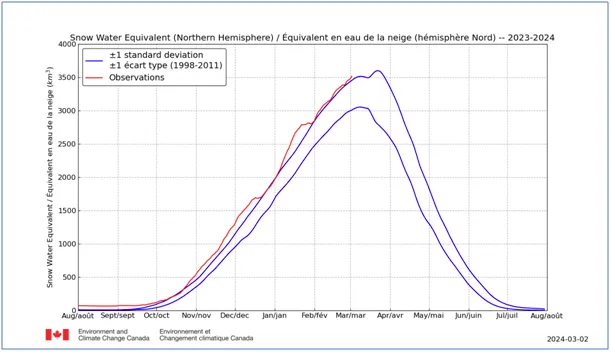
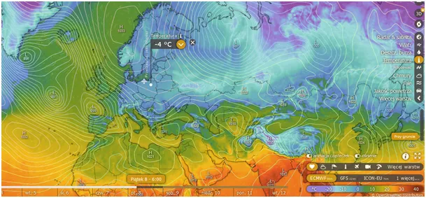
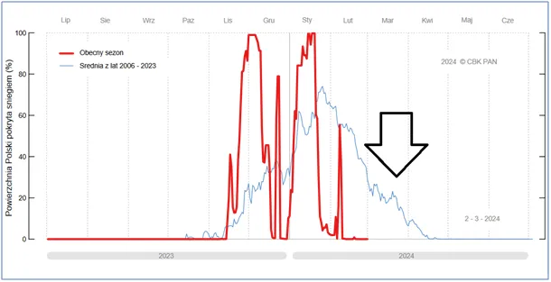
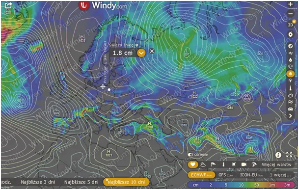
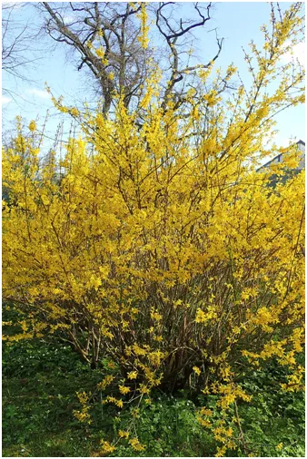

Śniegu mamy jak lodu
Gdy nawet we wschodniej Polsce forsycje cieszą nasze oczy, zima na półkuli północnej cały czas jest w ofensywie i do końca marca śniegu, nie tylko w Arktyce, będzie jeszcze przybywać, a jest go ponad normę wieloletnią.

Oznacza to, że potem będzie długo topniał, co przedłuży zimę na północy i w środku kontynentów.

Przy napierających ciepłych prądach morskich z południa oznacza to dynamiczną pogodę w marcu i później.

Już kolejny weekend ma się zacząć przymrozkami prawie w całej Europie, a opady śniegu (ostatnia mapka) są przewidywane w Hiszpanii, w Alpach i na Bałkanach oraz w Turcji. U nas skromniej, ale na północy i wschodzie zabieli się jeszcze tej wiosny.

Drugi wykres pokazuje na niebieskiej linii wieloletnie, średnie zaśnieżenie Polski i widać tam w połowie marca regularne nawroty zimy w postaci małych "pik". Cieszmy się zatem piękną pogodą i aby do lata.

Paweł Klimczewski